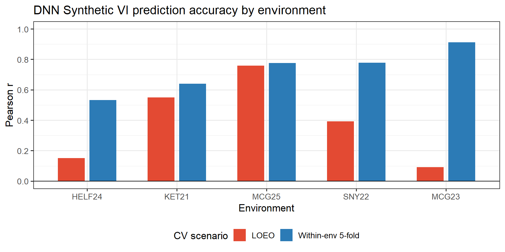
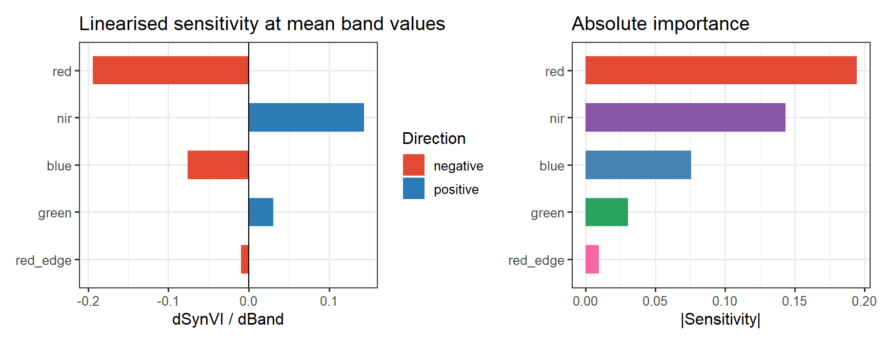

Last updated: 2026-05-14
Checks: 6 1
Knit directory: NY_WMBCL/
This reproducible R Markdown analysis was created with workflowr (version 1.7.2). The Checks tab describes the reproducibility checks that were applied when the results were created. The Past versions tab lists the development history.
The R Markdown is untracked by Git. To know which version of the R
Markdown file created these results, you’ll want to first commit it to
the Git repo. If you’re still working on the analysis, you can ignore
this warning. When you’re finished, you can run
wflow_publish to commit the R Markdown file and build the
HTML.
Great job! The global environment was empty. Objects defined in the global environment can affect the analysis in your R Markdown file in unknown ways. For reproduciblity it’s best to always run the code in an empty environment.
The command set.seed(20250129) was run prior to running
the code in the R Markdown file. Setting a seed ensures that any results
that rely on randomness, e.g. subsampling or permutations, are
reproducible.
Great job! Recording the operating system, R version, and package versions is critical for reproducibility.
Nice! There were no cached chunks for this analysis, so you can be confident that you successfully produced the results during this run.
Great job! Using relative paths to the files within your workflowr project makes it easier to run your code on other machines.
Great! You are using Git for version control. Tracking code development and connecting the code version to the results is critical for reproducibility.
The results in this page were generated with repository version ba3880e. See the Past versions tab to see a history of the changes made to the R Markdown and HTML files.
Note that you need to be careful to ensure that all relevant files for
the analysis have been committed to Git prior to generating the results
(you can use wflow_publish or
wflow_git_commit). workflowr only checks the R Markdown
file, but you know if there are other scripts or data files that it
depends on. Below is the status of the Git repository when the results
were generated:
Ignored files:
Ignored: .Rproj.user/99DC6967/bibliography-index/
Ignored: .Rproj.user/99DC6967/ctx/
Ignored: .Rproj.user/99DC6967/explorer-cache/
Ignored: .Rproj.user/99DC6967/presentation/
Ignored: .Rproj.user/99DC6967/profiles-cache/
Ignored: .Rproj.user/99DC6967/sources/per/
Ignored: .Rproj.user/99DC6967/tutorial/
Ignored: .Rproj.user/99DC6967/unsaved-notebooks/
Ignored: .Rproj.user/99DC6967/viewer-cache/
Ignored: .Rproj.user/shared/notebooks/05EEDF6A-9. MT_GP/
Ignored: .Rproj.user/shared/notebooks/07D5E585-12. Prediction_plots/
Ignored: .Rproj.user/shared/notebooks/7BC35D1D-4. Exploratory_pheno_ analysis/
Ignored: .Rproj.user/shared/notebooks/883CCBC3-pheno_corr/
Ignored: .Rproj.user/shared/notebooks/8F2317AD-2. Trait heritability analysis_EXP/
Ignored: .Rproj.user/shared/notebooks/BE3232F6-4. Exploratory_pheno_ analysis/
Ignored: .Rproj.user/shared/notebooks/FA723D52-7. PP_ag_mq/
Ignored: OREI Genotyping/.RData
Ignored: OREI Genotyping/.Rhistory
Untracked files:
Untracked: OREI Genotyping/G_data/
Untracked: OREI Genotyping/NAM_map.xlsx
Untracked: OREI Genotyping/NBsnp.Rdata
Untracked: OREI Genotyping/OREI_3K_QC.Rmd
Untracked: OREI Genotyping/OREI_3K_QC.html
Untracked: OREI Genotyping/OREI_3K_QC_cache/
Untracked: OREI Genotyping/OREI_3K_QC_files/
Untracked: OREI Genotyping/OREI_50K_QC.Rmd
Untracked: OREI Genotyping/OREI_50K_QC.html
Untracked: OREI Genotyping/OREI_50K_QC_cache/
Untracked: OREI Genotyping/OREI_50K_QC_files/
Untracked: OREI Genotyping/OREI_Genotyping_3K/
Untracked: OREI Genotyping/OREI_Genotyping_50K/
Untracked: OREI Genotyping/OREI_Genotyping_X/
Untracked: OREI Genotyping/OREI_X_QC.Rmd
Untracked: OREI Genotyping/OREI_X_QC.html
Untracked: OREI Genotyping/OREI_X_QC_cache/
Untracked: OREI Genotyping/OREI_X_QC_files/
Untracked: OREI Genotyping/check_fdt.R
Untracked: OREI Genotyping/check_idnum.R
Untracked: OREI Genotyping/check_ids.R
Untracked: OREI Genotyping/check_ids2.R
Untracked: OREI Genotyping/check_ids3.R
Untracked: OREI Genotyping/check_x_headers.R
Untracked: OREI Genotyping/inspect_map.R
Untracked: OREI Genotyping/map_UMN.xlsx
Untracked: OREI Genotyping/rename_3K_IDs.R
Untracked: OREI Genotyping/rename_3K_IDs_fix.R
Untracked: OREI Genotyping/~$3K_MAS_SNPs.xlsx
Untracked: OREI Genotyping/~$sorrells_3k_calls.xlsx
Untracked: analysis/13.DNN_Synthetic_VI_cache/
Untracked: analysis/13.DNN_Synthetic_VI_summary.Rmd
Untracked: figure/
Unstaged changes:
Modified: .claude/settings.local.json
Modified: OREI Genotyping/.claude/settings.local.json
Deleted: OREI Genotyping/3K_G_mat.Rdata
Modified: OREI Genotyping/3K_MAS_SNPs.xlsx
Deleted: OREI Genotyping/OREI Genotyping/OREI2024-B3K_01-10_Tri/OREI2024-B3K_01-10_Tri-AB.txt
Deleted: OREI Genotyping/OREI Genotyping/OREI2024-B3K_01-10_Tri/OREI2024-B3K_01-10_Tri-FDT.txt
Deleted: OREI Genotyping/OREI Genotyping/OREI2024-B3K_01-10_Tri/OREI2024-B3K_01-10_Tri-Project/Data/Duplicates.bin
Deleted: OREI Genotyping/OREI Genotyping/OREI2024-B3K_01-10_Tri/OREI2024-B3K_01-10_Tri-Project/Data/PairedData.bin
Deleted: OREI Genotyping/OREI Genotyping/OREI2024-B3K_01-10_Tri/OREI2024-B3K_01-10_Tri-Project/Data/PolyploidClusters.bin
Deleted: OREI Genotyping/OREI Genotyping/OREI2024-B3K_01-10_Tri/OREI2024-B3K_01-10_Tri-Project/Data/ad.bin
Deleted: OREI Genotyping/OREI Genotyping/OREI2024-B3K_01-10_Tri/OREI2024-B3K_01-10_Tri-Project/Data/heredity.bin
Deleted: OREI Genotyping/OREI Genotyping/OREI2024-B3K_01-10_Tri/OREI2024-B3K_01-10_Tri-Project/Data/ld.bin
Deleted: OREI Genotyping/OREI Genotyping/OREI2024-B3K_01-10_Tri/OREI2024-B3K_01-10_Tri-Project/Data/pairtable.bin
Deleted: OREI Genotyping/OREI Genotyping/OREI2024-B3K_01-10_Tri/OREI2024-B3K_01-10_Tri-Project/Data/projdat.bin
Deleted: OREI Genotyping/OREI Genotyping/OREI2024-B3K_01-10_Tri/OREI2024-B3K_01-10_Tri-Project/Data/sd.bin
Deleted: OREI Genotyping/OREI Genotyping/OREI2024-B3K_01-10_Tri/OREI2024-B3K_01-10_Tri-Project/Data/seqdata.bin
Deleted: OREI Genotyping/OREI Genotyping/OREI2024-B3K_01-10_Tri/OREI2024-B3K_01-10_Tri-Project/Data/tabledat.bin
Deleted: OREI Genotyping/OREI Genotyping/OREI2024-B3K_01-10_Tri/OREI2024-B3K_01-10_Tri-Project/OREI2024-B3K_01-10_Tri-Project.bsc
Deleted: OREI Genotyping/OREI Genotyping/OREI2024-B3K_01-10_Tri/OREI2024-B3K_01-10_Tri-R.txt
Deleted: OREI Genotyping/OREI Genotyping/OREI2024-B3K_01-10_Tri/OREI2024-B3K_01-10_Tri-Samples.txt
Deleted: OREI Genotyping/OREI Genotyping/OREI2024-B3K_01-10_Tri/OREI2024-B3K_01-10_Tri-VCF-Samples.txt
Deleted: OREI Genotyping/OREI Genotyping/OREI2024-B3K_01-10_Tri/OREI2024-B3K_01-10_Tri-mFDT.txt
Deleted: OREI Genotyping/OREI Genotyping/OREI2024-B3K_01-10_Tri/OREI2024-B3K_01-10_Tri-poorQC_VCF-Samples.txt
Deleted: OREI Genotyping/OREI Genotyping/OREI2024-B3K_01-10_Tri/OREI2024-B3K_01-10_Tri.MorexV3.IDnum.vcf
Deleted: OREI Genotyping/OREI Genotyping/OREI2024-B3K_01-10_Tri/OREI2024-B3K_01-10_Tri.MorexV3.vcf
Deleted: OREI Genotyping/OREI Genotyping/OREI2024-B3K_01-14-COMBO/OREI2024-B3K_01-14-AB.txt
Deleted: OREI Genotyping/OREI Genotyping/OREI2024-B3K_01-14-COMBO/OREI2024-B3K_01-14-FDT.txt
Deleted: OREI Genotyping/OREI Genotyping/OREI2024-B3K_01-14-COMBO/OREI2024-B3K_01-14-R.txt
Deleted: OREI Genotyping/OREI Genotyping/OREI2024-B3K_01-14-COMBO/OREI2024-B3K_01-14-Samples.txt
Deleted: OREI Genotyping/OREI Genotyping/OREI2024-B3K_01-14-COMBO/OREI2024-B3K_01-14-VCF-Samples.txt
Deleted: OREI Genotyping/OREI Genotyping/OREI2024-B3K_01-14-COMBO/OREI2024-B3K_01-14-poorQC_VCF-Samples.txt
Deleted: OREI Genotyping/OREI Genotyping/OREI2024-B3K_11-14_DualO/OREI2024-B3K_11-14_DualO-AB.txt
Deleted: OREI Genotyping/OREI Genotyping/OREI2024-B3K_11-14_DualO/OREI2024-B3K_11-14_DualO-FDT.txt
Deleted: OREI Genotyping/OREI Genotyping/OREI2024-B3K_11-14_DualO/OREI2024-B3K_11-14_DualO-Project/Data/Duplicates.bin
Deleted: OREI Genotyping/OREI Genotyping/OREI2024-B3K_11-14_DualO/OREI2024-B3K_11-14_DualO-Project/Data/PairedData.bin
Deleted: OREI Genotyping/OREI Genotyping/OREI2024-B3K_11-14_DualO/OREI2024-B3K_11-14_DualO-Project/Data/PolyploidClusters.bin
Deleted: OREI Genotyping/OREI Genotyping/OREI2024-B3K_11-14_DualO/OREI2024-B3K_11-14_DualO-Project/Data/ad.bin
Deleted: OREI Genotyping/OREI Genotyping/OREI2024-B3K_11-14_DualO/OREI2024-B3K_11-14_DualO-Project/Data/heredity.bin
Deleted: OREI Genotyping/OREI Genotyping/OREI2024-B3K_11-14_DualO/OREI2024-B3K_11-14_DualO-Project/Data/ld.bin
Deleted: OREI Genotyping/OREI Genotyping/OREI2024-B3K_11-14_DualO/OREI2024-B3K_11-14_DualO-Project/Data/pairtable.bin
Deleted: OREI Genotyping/OREI Genotyping/OREI2024-B3K_11-14_DualO/OREI2024-B3K_11-14_DualO-Project/Data/projdat.bin
Deleted: OREI Genotyping/OREI Genotyping/OREI2024-B3K_11-14_DualO/OREI2024-B3K_11-14_DualO-Project/Data/sd.bin
Deleted: OREI Genotyping/OREI Genotyping/OREI2024-B3K_11-14_DualO/OREI2024-B3K_11-14_DualO-Project/Data/seqdata.bin
Deleted: OREI Genotyping/OREI Genotyping/OREI2024-B3K_11-14_DualO/OREI2024-B3K_11-14_DualO-Project/Data/tabledat.bin
Deleted: OREI Genotyping/OREI Genotyping/OREI2024-B3K_11-14_DualO/OREI2024-B3K_11-14_DualO-Project/OREI2024-B3K_11-14_DualO-Project.bsc
Deleted: OREI Genotyping/OREI Genotyping/OREI2024-B3K_11-14_DualO/OREI2024-B3K_11-14_DualO-R.txt
Deleted: OREI Genotyping/OREI Genotyping/OREI2024-B3K_11-14_DualO/OREI2024-B3K_11-14_DualO-Sample.txt
Deleted: OREI Genotyping/OREI Genotyping/OREI2024-B3K_11-14_DualO/OREI2024-B3K_11-14_DualO-Sample.txtVCF-Samples.txt
Deleted: OREI Genotyping/OREI Genotyping/OREI2024-B3K_11-14_DualO/OREI2024-B3K_11-14_DualO-mFDT.txt
Deleted: OREI Genotyping/OREI Genotyping/OREI2024-B3K_11-14_DualO/OREI2024-B3K_11-14_DualO-poorQC_VCF-Samples.txt
Deleted: OREI Genotyping/OREI Genotyping/OREI2024-B3K_11-14_DualO/OREI2024-B3K_11-14_DualO.MorexV3.IDnum.vcf
Deleted: OREI Genotyping/OREI Genotyping/OREI2024-B3K_11-14_DualO/OREI2024-B3K_11-14_DualO.MorexV3.vcf
Modified: OREI Genotyping/sorrells_3k_calls.xlsx
Note that any generated files, e.g. HTML, png, CSS, etc., are not included in this status report because it is ok for generated content to have uncommitted changes.
There are no past versions. Publish this analysis with
wflow_publish() to start tracking its development.
A shallow bottleneck DNN (5 bands → 16 → 8 → 1 Synthetic VI → 8 → 1) was trained to predict yield (kg/ha) from five raw multispectral bands (Blue, Green, Red, RedEdge, NIR) at one pre-selected optimal flight timepoint per environment. Five environments were used: HELF24, KET21, MCG23, MCG25, SNY22.
Two cross-validation scenarios were evaluated, both splitting by GID (genotype ID) to prevent data leakage, with scalers fit on training data only:
| Scenario | What it measures |
|---|---|
| LOEO — leave one environment out | Cross-environment generalisation |
| Within-env 5-fold CV (by GID) | Within-trial predictive ability |
| CV scenario | Mean r | SD r | Mean RMSE |
|---|---|---|---|
| LOEO | 0.389 | 0.277 | 1656.3 |
| Within-env 5-fold | 0.728 | 0.044 | 635.2 |
Key takeaway: within-environment predictive ability (r = 0.728) is substantially higher than cross-environment generalisation (LOEO r = 0.389), indicating that the learned band combination captures within-trial yield variation well but is sensitive to between-environment shifts in spectral response.
| Environment | LOEO r | LOEO RMSE | N test | Within-env r | Within-env SD r | Within-env RMSE |
|---|---|---|---|---|---|---|
| HELF24 | 0.151 | 1963 | 312 | 0.532 | 0.095 | 700 |
| KET21 | 0.550 | 759 | 466 | 0.639 | 0.044 | 683 |
| MCG23 | 0.092 | 1469 | 504 | 0.912 | 0.011 | 571 |
| MCG25 | 0.759 | 3023 | 232 | 0.776 | 0.042 | 523 |
| SNY22 | 0.392 | 1067 | 424 | 0.778 | 0.029 | 700 |

Pearson r by environment for LOEO (cross-env) and within-env 5-fold CV
Notable patterns:
| Trait | DNN Syn VI r (LOEO) | Best std VI | Std VI r (LOEO) | Δr |
|---|---|---|---|---|
| yield_kgha | 0.389 | EVI | 0.628 | -0.239 |
Under LOEO, the DNN Synthetic VI (r = 0.389) is outperformed by EVI (r = 0.628, Δr = −0.239). This is consistent with the within-env vs. cross-env gap observed above: the DNN learns environment-specific spectral patterns that do not transfer well, whereas EVI is a fixed, calibration-free index that generalises more robustly across environments.

Linearised band sensitivity (gradient of Synthetic VI at mean band values)
| Band | dVI/dBand | |Sensitivity| |
|---|---|---|
| red | -0.1943 | 0.1943 |
| nir | 0.1435 | 0.1435 |
| blue | -0.0760 | 0.0760 |
| green | 0.0305 | 0.0305 |
| red_edge | -0.0097 | 0.0097 |
The learned Synthetic VI has a structure broadly similar to NDVI: NIR positive, Red negative — the two bands with the largest absolute sensitivity. Green contributes a small positive signal while RedEdge is near-zero at the mean but ranks first by gradient-based importance averaged over all samples (suggesting non-linear RedEdge sensitivity away from the mean).
The approximate linearised formula around mean band values is:
\[\text{SynVI}_{\text{yield}} \approx -0.194 \times \text{Red} + 0.144 \times \text{NIR} - 0.076 \times \text{Blue} + \text{const}\]
| Metric | Value |
|---|---|
| Trait modelled | yield_kgha |
| Environments (N) | 5 (HELF24, KET21, MCG23, MCG25, SNY22) |
| DNN architecture | 5 → 16 → 8 → 1 (SynVI) → 8 → 1 |
| LOEO mean r | 0.389 (range: 0.092 – 0.759) |
| LOEO mean RMSE (kg/ha) | 1 656 (range: 759 – 3 023) |
| Within-env 5-fold mean r | 0.728 (range: 0.532 – 0.912) |
| Within-env mean RMSE (kg/ha) | 635 (range: 523 – 700) |
| Best std VI (LOEO) | EVI |
| Best std VI r (LOEO) | 0.628 |
| DNN vs EVI Δr (LOEO) | −0.239 (DNN < EVI under LOEO) |
| Top band (gradient importance) | RedEdge |
| Top band (linearised sensitivity) | Red (negative) |
R version 4.4.2 (2024-10-31 ucrt)
Platform: x86_64-w64-mingw32/x64
Running under: Windows 11 x64 (build 22621)
Matrix products: default
locale:
[1] LC_COLLATE=Estonian_Estonia.utf8 LC_CTYPE=Estonian_Estonia.utf8
[3] LC_MONETARY=Estonian_Estonia.utf8 LC_NUMERIC=C
[5] LC_TIME=Estonian_Estonia.utf8
time zone: America/New_York
tzcode source: internal
attached base packages:
[1] stats graphics grDevices utils datasets methods base
other attached packages:
[1] patchwork_1.3.2 kableExtra_1.4.0 knitr_1.50 lubridate_1.9.5
[5] forcats_1.0.1 stringr_1.6.0 dplyr_1.1.4 purrr_1.0.2
[9] readr_2.1.5 tidyr_1.3.1 tibble_3.2.1 ggplot2_4.0.1
[13] tidyverse_2.0.0 workflowr_1.7.2
loaded via a namespace (and not attached):
[1] sass_0.4.10 generics_0.1.4 xml2_1.5.1 stringi_1.8.4
[5] hms_1.1.4 digest_0.6.37 magrittr_2.0.3 timechange_0.4.0
[9] evaluate_1.0.5 grid_4.4.2 RColorBrewer_1.1-3 fastmap_1.2.0
[13] rprojroot_2.1.1 jsonlite_2.0.0 processx_3.8.6 whisker_0.4.1
[17] ps_1.9.1 promises_1.5.0 httr_1.4.7 viridisLite_0.4.3
[21] scales_1.4.0 textshaping_1.0.5 jquerylib_0.1.4 cli_3.6.3
[25] rlang_1.2.0 withr_3.0.2 cachem_1.1.0 yaml_2.3.10
[29] otel_0.2.0 tools_4.4.2 tzdb_0.4.0 httpuv_1.6.16
[33] vctrs_0.6.5 R6_2.6.1 lifecycle_1.0.5 git2r_0.36.2
[37] fs_1.6.6 pkgconfig_2.0.3 callr_3.7.6 pillar_1.11.1
[41] bslib_0.10.0 later_1.4.4 gtable_0.3.6 glue_1.8.0
[45] Rcpp_1.1.0 systemfonts_1.3.2 xfun_0.53 tidyselect_1.2.1
[49] rstudioapi_0.18.0 farver_2.1.2 htmltools_0.5.8.1 labeling_0.4.3
[53] svglite_2.2.2 rmarkdown_2.31 compiler_4.4.2 getPass_0.2-4
[57] S7_0.2.1